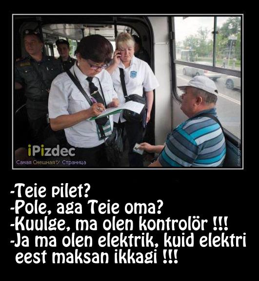
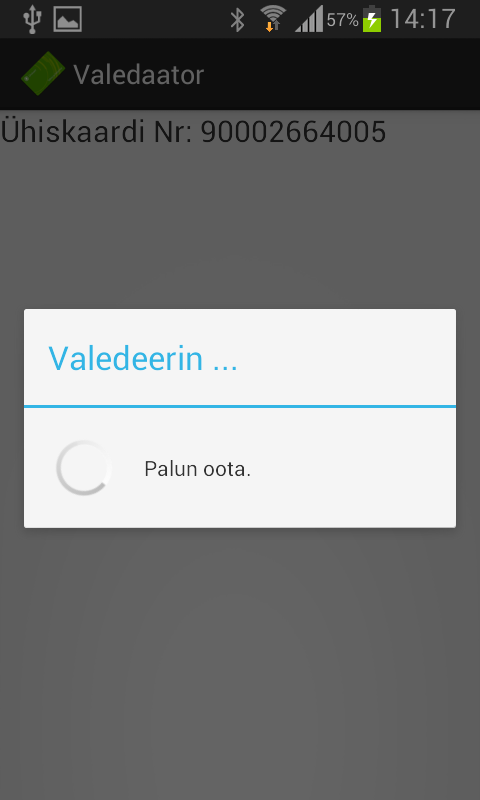
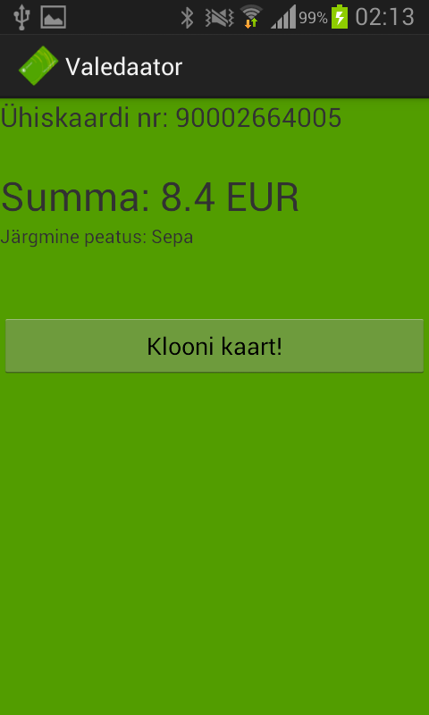
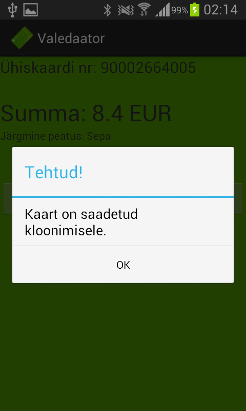

Tallinnas tuleb trammiga sõitmiseks lehvitada oranži seadme juures "piiksukaarti". Ekslikult võib see jätta mulje, et sõiduõigust tõendav pilet on kuidagi füüsiliselt poogitud antud rohelise kaardi peale: nagu ka ID-kaardil põhineva pileti puhul on taas tegemist "andmebaasiriigi" lahendusega, kus tegelik sõiduõigus on kirjas kusagil keskses andmebaasis ja roheline kaart ainult on viit sinna andmebaasi. Erinevalt isikukoodil põhinevast viidast (ehk siis ID-piletist) lisab taoline füüsiline lahendus andmebaasi veel rohkem infot: isikustatud kaardi kasutamisel on teada kes, kuna ja kus bussiga sõidab. Et raha ega sõiduõigust ei talletata kaardile "füüsiliselt" saab kinnitust isikustamata kaardile rkioskis raha laadides: müüja võtab raha vastu, loeb triipkoodi lugejaga kaardilt selle seerianumbri ja raha jõuabki "kontole". "Piiks-piiks ja raha tuleb" siin ei kehti.
ID-pileti puhul oli see lihtne: kontrolör seadis isiku vastavusse isikukoodiga enda seadmega (kontrollis dokumendil oleva näo vastavust isiku näoga), mis omakorda kontrollis üle interneti kesksest andmebaasist, kas antud isikukoodiga tegelasel oli antud hetkel kehtiv tunnipilet või kuupilet vmt. Sõiduõiguse tõendamiseks tulnuks võltsida ID-kaarti (või mõnd muud isikut tõendavat dokumenti). Piiksukaardi puhul peab kontrolör kõigepealt kontrollima, kas antud kaart on bussi sisenedes validaatoris edukalt registreeritud (kaardil oli piisavalt ettemaksu või kuulus kaart tasuta sõidu õigust omavale isikule) ja isikustatud ning tasuta sõitva inimese puhul sarnaselt ID-piletiga viima vastavusse inimese nime ja näo.
Oluline erinevus ID-piletiga on isikustamata kaart, kus peal ainult sularaha ja mille puhul piisab sõiduõiguse tõestamiseks ainult registreeritud ühiskaardist. Olles tartlane, keskendub see miniuuring justnimelt sellisele olukorrale.
Kuidas lollitda süsteemi nii, et õnnetu tartlane saaks Tallinnas samuti tasuta trammiga sõita (Tartus ju trammi ei ole) ? Püstitan ühe hüpoteesi süsteemi koostisosadest ja fokuseerin miniuuringu ainsale objektile, mida saan ise vaadelda: kaardile endale.
Ühiskaart on RFID tehnoloogial põhinev, väidetavalt Mifare Plus (tootja lehekülg, allikas) kaart. Samas NXP Tag Info rakendus peab piiksukaarti Mifare Classic kaardiks (Mifare Plus Security režiimis 1 käitubki nagu Mifare Classic, tagasiühilduvuse eesmärkidel). Sisuliselt on Mifare Classic võrreldavad mälupulgaga, mis jagatuks sektoriteks ja sektorid omakorda blokkideks. Iga sektoriga on võimalik siduda kaks võtit, A ja B, millega autentides on võimalik sektoris olevaid andmeid kas lugeda või kirjutada.
Kaardi tagumisele küljele on kantud 11-kohaline kaardi number koos triipkoodiga (tõenäoliselt sama number).
Erinevalt näiteks Londoni Oyster kaardi või Helsinki süsteemist on võimalik Tallinnas kasutada lisaks ühiskaardile ka RFID kiibiga varustatud ISIC kaarte (tulevikus võibolla veelgi rohkem, allikas), mida ei väljasta Tallinna Transpordiamet. Järgnevas hüpoteesis on sellel faktil oluline roll.
See.
Seletus inimkeeli.
Madala taseme detailid kõrvale jättes on oluliseks infoks NDEF sõnum. Sõnum koosneb kahest kirjest:
Viidatud sertifikaadiga peaks saama seda signatuuri kontrollida. Proovime.
$ wget --no-check-certificate http://pilet.ee/crt/30864900-0001.crt --2013-01-10 01:57:13-- http://pilet.ee/crt/30864900-0001.crt Resolving pilet.ee (pilet.ee)... 90.191.225.130 Connecting to pilet.ee (pilet.ee)|90.191.225.130|:80... connected. HTTP request sent, awaiting response... 301 Moved Permanently Location: http://www.pilet.ee//crt/30864900-0001.crt [following] --2013-01-10 01:57:15-- http://www.pilet.ee//crt/30864900-0001.crt Resolving www.pilet.ee (www.pilet.ee)... 90.191.225.130 Connecting to www.pilet.ee (www.pilet.ee)|90.191.225.130|:80... connected. HTTP request sent, awaiting response... 302 Found Location: https://www.pilet.ee/crt/30864900-0001.crt [following] --2013-01-10 01:57:16-- https://www.pilet.ee/crt/30864900-0001.crt Connecting to www.pilet.ee (www.pilet.ee)|90.191.225.130|:443... connected. WARNING: The certificate of ‘www.pilet.ee’ is not trusted. WARNING: The certificate of ‘www.pilet.ee’ hasn't got a known issuer. HTTP request sent, awaiting response... 200 OK Length: 851 [application/x-x509-ca-cert] Saving to: ‘30864900-0001.crt’Tähelepanekud
Etteruttavalt mainin, et teised kaks faili peaksid olema SEB ja Ülikoolide väljastatavate kaartide sertifikaadid. "Peaksid", sest veebis avaldatud kujul pole nad kasutatavad valede reavahetuste tõttu (LF või CR/LF asemel on kasutusel ainult CR). Parandatud ja paemaks lugemiseks tekstikujule viidud failid on vaadeldavad siit:
Tähelepanekuid sertifikaatide vaatlusest:Proovime kontrollida kaardil olevat allkirja:
$ openssl rsautl -in ebf2ce70-signature.bin -verify -hexdump -certin -inkey live_30864900-0001.txt RSA operation error 140735202339260:error:0407006A:rsa routines:RSA_padding_check_PKCS1_type_1:block type is not 01:rsa_pk1.c:100: 140735202339260:error:04067072:rsa routines:RSA_EAY_PUBLIC_DECRYPT:padding check failed:rsa_eay.c:721:See ei õnnestu. Järelikult on kas väljastatud kaardid või nendel viidatud veebis olev sertifikaat vale.
Head inimesed annetasid veel pileteid katsetamiseks:
SEB ISIC kaardiga aga allkirja kontroll töötab:
$ openssl rsautl -in 7602dbda-signature.bin -verify -hexdump -certin -inkey seb_ut_fixed_92337331-0001.txt 0000 - 30 21 30 09 06 05 2b 0e-03 02 1a 05 00 04 14 8b 0!0...+......... 0010 - ba 33 2d e4 fb e6 35 10-cc 01 1a 03 82 69 73 1b .3-...5......is. 0020 - 5e a6 40Ehk siis kaardi 7602dbda puhul on allkirjastatud midagi, mille SHA1 räsi on ba8b2d33fbe435e6cc101a01820373695e1b40a6. TODO: record 1 loovalt läbi hashida. NDEF Sig spekk.
Mifare võtmehaldus (sümmetrilised võtmed) oleks äärmiselt keeruline/võimatu kui tahta kasutada suvalist süsteemivälist kaarti (näiteks pangakaarti või üliõpilaspiletit). Seega tehniliselt kehtiv pilet on kaardile kantud andmefail, mis sisaldab kaardi väljastaja signatuuri kaardiandmete kohta (kaardi PAN, UID ja midagi veel). Kopeerides ühelt kaardilt teisele NDEF andmekogu ja muutes kaardi UID-i, tekib ka töötav kloon kaardist.
"Oma kaardi jääki näete valideerimisel ja raha mahaarvamist saate kontrollida internetis pilet.ee kaudu. Kui kaardi jääk on suurem kui 50 eurot, siis validaator jääki turvalisuse kaalutlusel ei näita ja seda saab vaadata jällegi pilet.ee keskkonnast." (allikas). Kuna ühiskaardi numbrite prefiks on teada ja kehtivaid numbreid annab lihtsasti genereerida (siin on 300000 kehtivat pileti numbrit mille on teinud ./py/pilet.py totalisaator), ning pilet.ee veebilehelt saab kontrollida kaardil oleva raha hulka , on "huvitavate kaartide" nimekirja koostamine väga lihtne. Näiteks minu kaardil on https://www.pilet.ee/viipe/uhiskaart/activetickets?active_tickets_filter_set&ticket_sale_detail_start=0&active_tickets_filter[card_id]=90002664005 (kopeeri aadress, NB! GET päring töötab hästi)
Tallinas olles oli tuuline, sajune ja jahe ilm. Lühikesel trammisõidul oli vähemalt kaks noort inimest, kes kandsid enda ühiskaarti seljakoti/käekoti välises taskus ja viibutasid validaatori ees kindaid käest võtmata kotti. Kuigi antud juhul oli väga suure tõenäosusega tegemist tasuta sõitjaga, saab kannatlik kaasreisija märkamatult skannerida kaasreisijate taskutes ja kottides olevaid RFID pileteid ja neist kloone teha. "Sniffing cards from a feet away"
1024 bitine RSA on praeguseks enda aja ära elanud. Erinevad ründed ja arengud matemaatikas on halva randomi puhul teinud võimalikuks võtmete ära arvamise (see eeldaks muidugi, et veebis oleks kättesaadav reaalselt kasutatav avalik võti!). Juhul kui pilet.ee süsteem ei salvesta kaardi UID-i andmebaasis ja seda kasutatakse ainult validaatoris allkirja kontrollimisel, on võimalik ise luua ühiskaartide koopiaid "kodust lahkumata".
Valge PVC kaardi üle värvimine rohelisega peaks kõigile jõukohane olema.
$ ./py/validaator.py tag-7602dbda.xml Yhiskaardi NFC TagInfo faili analysaator. info: martin@martinpaljak.net Viipekaardi tootja: SEB Viipkeaardi sisu: Pileti NR: 80140082548 Pileti PAN: 9233733180140082548 Mifare UID: 7602dbda pilet.ee UID: 7602dbda UID klapib. SHA1 allkirjas: 8bba332de4fbe63510cc011a038269731b5ea640 Allkirjastaja: http://pilet.ee/crt/92337331-0001.crt Kontrollitud allkirja räsi: 8bba332de4fbe63510cc011a038269731b5ea640
$ ./py/validaator.py tag-ebf2ce70.xml Yhiskaardi NFC TagInfo faili analysaator. info: martin@martinpaljak.net Viipekaardi tootja: Yhiskaart Viipkeaardi sisu: 13.9 EUR Pileti NR: 90002664005 Pileti PAN: 3086490090002664005 Mifare UID: ebf2ce70 pilet.ee UID: ebf2ce70 UID klapib. SHA1 allkirjas: efb16b00738d6b679382f6b1968b2091a602f96b Allkirjastaja: http://pilet.ee/crt/30864900-0001.crt Allkiri EI VERIFITSEERU!
$ ./py/validaator.py tag-cbcf08a4.xml Yhiskaardi NFC TagInfo faili analysaator. info: martin@martinpaljak.net Viipekaardi tootja: Yhiskaart Viipkeaardi sisu: 0.0 EUR (Tallinlase tasuta sõiduõigus) Pileti NR: 90001101611 Pileti PAN: 3086490090001101611 Mifare UID: cbcf08a4 pilet.ee UID: cbcf08a4 UID klapib. SHA1 allkirjas: d063e7bbc5651884c9c93348fea3f5ab20eb676b Allkirjastaja: http://pilet.ee/crt/30864900-0001.crt Allkiri EI VERIFITSEERU!
$ ./py/validaator.py tag-ea2aae02.xml Ühiskaardi NFC TagInfo faili analysaator. info: martin@martinpaljak.net Viipekaardi tootja: Yhiskaart Viipkeaardi sisu: 13.9 EUR Pileti NR: 90002664005 Pileti PAN: 3086490090002664005 Mifare UID: ea2aae02 pilet.ee UID: ebf2ce70 UID EI KLAPI! SHA1 allkirjas: efb16b00738d6b679382f6b1968b2091a602f96b Allkirjastaja: http://pilet.ee/crt/30864900-0001.crt Allkiri EI VERIFITSEERU!
Vaata eelmist ;)
$ ./py/pilet.py pilet.py [totalisaator|terminaator|karburaator|bingo|<kaardi PAN>...|<kaardi nr>...]
$ ./py/pilet.py totalisaator 90000000004 90000000012 90000000020 90000000038 90000000046 90000000053 # ... cut ... 90002999948 90002999955 90002999963 90002999971 90002999989 90002999997
90002999955 7.8 EUR 90000265565 1.5 EUR Tallinlase tasuta sõiduõigus 90000080378 0.0 EUR Pensionäri tasuta sõiduõigus 90000222657 0.0 EUR Tallinn-Harjumaa 1.-4. tsooni kuukaart 90000279889 21.39 EUR 90000286546 0.0999999999999999 EUR Tallinlase tasuta sõiduõigus 90000001770 0.0999999999999999 EUR Tallinlase tasuta sõiduõigus 90002500100 0.0999999999999999 EUR 90000207864 1.2 EUR Nelja tsooni ühiskaart 90000235899 20.0 EUR 90000007710 20.0 EUR 90001965379 -1.1 EUR 90000200919 -4.4 EUR .... 90004501734
Rahakotti fooliumit või siis selline ümbrik (vastupidavam kui tavaline hõbepaber)
Karavan läheb edasi
Lingid:  
{kind=link}